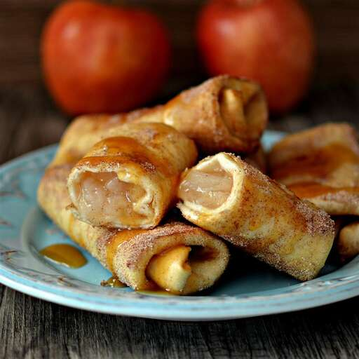

Apple Cinnamon Chimichangas

Ingredients
- 1 (21 ounce) can apple pie filling
- ½ cup cinnamon sugar
- 15 (6 inch) flour tortillas
- oil for frying
Directions
-
Heat apple pie filling in a small pot over medium-low heat until
warmed through, about 5 minutes.
- Place cinnamon sugar in a shallow dish.
-
Spoon 1 1/2 tablespoons of filling onto each tortilla. Fold in
opposing edges and roll up as you would a burrito.
- Heat oil in a large, deep saucepan over medium heat.
-
Place a batch of rolled tortillas seam-side down in the hot oil and
fry until browned and crispy, 1 to 2 minutes. Turn and continue
frying until all sides are browned, 1 to 2 minutes more. Roll in
cinnamon sugar to coat. Repeat with remaining batches.